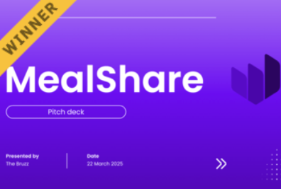

// code for the world


What is TechnoHacks?
Registration for TechnoHacks 2025 is now closed.
TechnoHacks is Skyline High School's upcoming invention marathon designed to provide middle and high school students from the Issaquah School District an opportunity to learn professional coding and business skills (that they don't teach you in school!), create impactful projects, and win cool prizes.
TechnoHacks will be held at Skyline High School on March 22, 2025, from 9 a.m. to 6 p.m.
The theme is sustainability. Students will create projects addressing one of the United Nation's 17 Sustainability Goals to contribute to a better world for everyone.


Schedule
Frequently Asked Questions
What is a hackathon?
A hackathon is where you turn your crazy ideas into real stuff. You'll learn how to design or code an app, learn from industry professionals, and pitch your idea to judges! Students from all across the Issaquah School District will gather for a day of innovation and learning. You take care of the building, we take care of you.
How much does it cost?
TechnoHacks is completely free! Snacks and caffine will be provided, but meals will not; there are several places to eat nearby, so bring some cash or lunch from home if you think you'll need it!
How many people can be in a team?
Four students are allowed per team. There should be at least two people in each team—we work better together than we do alone! You can register with your team or find one through Discord or the a team mixer at the start of the hackathon.
What can I build?
You can build or code whatever you'd like, but we recommend a mobile app! We will not be providing any hardware materials, so if you're planning on going that route, be sure to bring your own tools. Any project that targets one of the UN's 17 Goals is acceptable.
What if I don't know how to code?
No worries! TechnoHacks is all about learning, so we don't expect you to build a fully functional app at all. We'll teach you how to create an idea, wireframe it, and pitch it, so you can get your idea out there without having to code at all!
Is it overnight?
Due to venue restrictions, TechnoHacks will be held only on one day due to venue constrainsts, but you'll still have plenty of time to make your idea a reality, especially since we don't expect your hack to be fully functional!
Why the UN's 17 Goals for Sustainability?
TechnoHacks was inspired by Technovation, an international app development competition that encourages participants to create a solution for one of the UN's Sustainable Development Goals. We believe that creating with the goals in mind helps us build projects that help others, which is what tech is all about.
Who can attend?
TechnoHacks is open to all middle and high school students from the Issaquah School District.
Don't worry if you're completely new to hackathons; we will be holding workshops where students can learn how to get started with ideation, web/app development, code collaboration, and more.
Organizers
Sneha Moudgalya
Lead Organizer
Suruchi Dokka
Director of Communications
Riya Chopade
Finance Lead
Muntasir Nahiyan
Website Design
Haowen Zhang
Graphic Design
Tishya Sudhahar
Marketing Lead
Shyann Stanley
Social Media
Kruthi Sathyanarayana
Outreach
Project Gallery
Aerorelief (Winner!)
AeroRelief delivers food and clean water to people who need it. It uses drones to drop off supplies in places that are hard to reach. People can request food and water through the app or website. The drones also deliver biodegradable water bottles to reduce waste. It helps communities get food and water quickly. The service is aimed at areas with poor infrastructure or after disasters. AeroRelief makes sure that the essentials get to people faster and easier. It also shows nearby clean water sources on an interactive map.
VISIONARY
Our app is a learning platform that connects students with retired and current teachers through curated lesson plans and interactive material that range from kindergarten to master's degree knowledge. Students can choose from a wide range of courses, learning at their own pace while receiving instant support from real time teachers who are always willing to assist with explanations and practice. Whether you are a student without access to traditional schooling or just eager to learn more, our app makes top tier education available to all, anytime and anywhere.
MealShare (Winner!)
MealShare is a platform that connects businesses, restaurants, and individuals with surplus food to local shelters and food banks, making food donations fast and efficient. It automates logistics, tracks impact and helps reduce food waste while fighting hunger and promoting sustainability. 
ReClaim
The idea for our mobile application, ReClaim, came from personal experiences and things that we learned about at school. Grace came from Taiwan where there would be water shortages during the summer, and Rishab had read articles about how certain places in the world lack water resources; these led to us thinking about the importance of water conservation. With our main focus on the United Nations' Sustainable Development's 6th goal - Ensure Availability and Sustainable Management of Water and Sanitation for All - and a few others (such as SDG 4: Quality Education, SDG 12: Responsible Consumption and Production, SDG 13: Climate Action, and SDG 15: Life on Land), we decided to make an educational mobile APP that encourages the user to monitor their water usage, recycle, and adopt a more sustainable lifestyle overall by gamifying the experience. The application tracks and rewards the user for recycling objects by adding the object to the survival game section of the application, which would in turn progress their game and keep their character alive. The game character also has health points that are directly influenced by water points, and the user's water usage input would determine how quickly the water points drain.